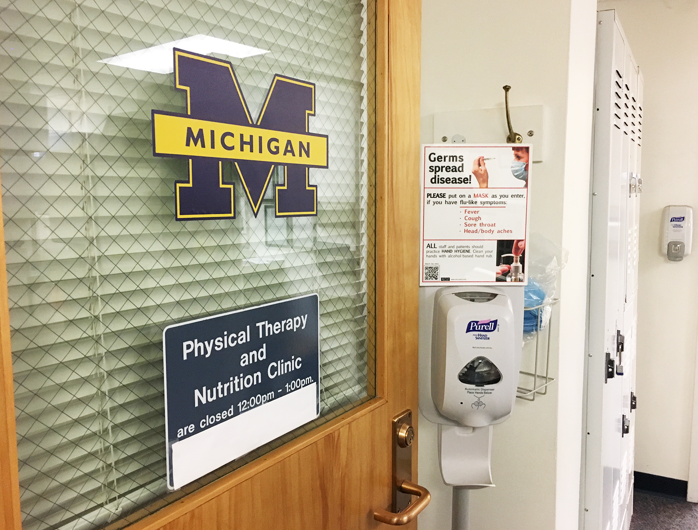
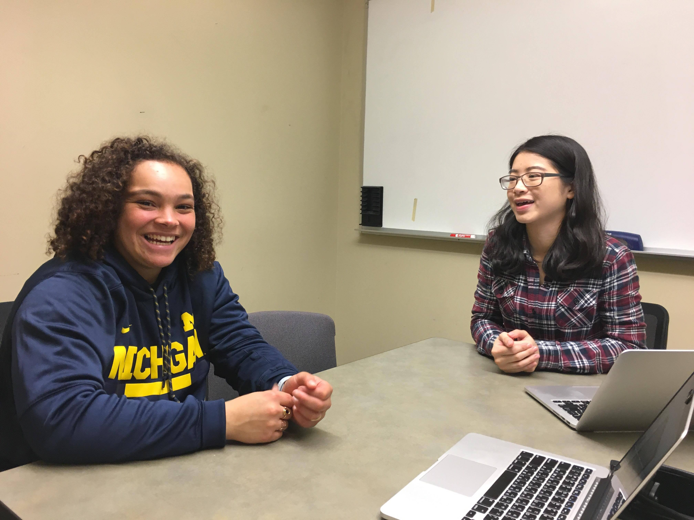
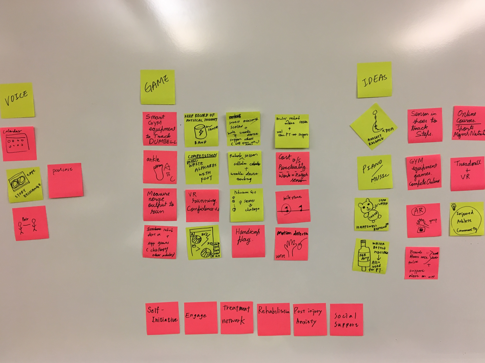
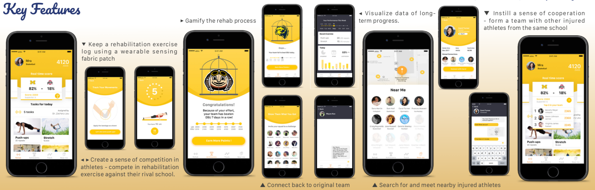
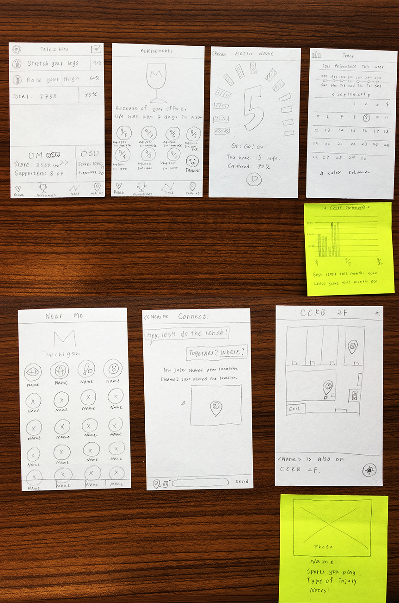

CHI 2018: AthleteJuvo
Interaction Design & UX Research
"Engage", CHI Student Design Competition, 2018:
Gamification solution for student athlete rehabilitation exercises and social support.
* Honorable Mention (2nd Prize) in the Technology/Design category at expoSItion, 2018.
Some Background Information
In a team of 4, we competed in the CHI 2018 Student Design Competition, whose theme this year is "ENGAGE", use human-centred design approaches to develop a new way to support, empower, or change the behaviour of a group around a shared area of interest. Our team decided to focus on the psychological welfare of injured student athletes since after initial survey, 96.5% of injured student athletes reported affected their psychological well-being.
Project Overview
Student-athletes usually experience psychological issues during their injured period, which play important roles in their rehabilitation. The three major challenges are loss of identity, isolation, and inability to understand and communicate their recovery progress between checkups. To assist the injured athletes, we propose AthleteJuvo, a collaborative gaming solution incorporating routine rehabilitation exercises, team competition, and social supports. Specifically, AthleteJuvo utilizes the competitive nature of athletes to gamify the rehabilitation process. Athletes rebuild their identity by forming a team with other injured athletes to compete with their rival schools. AthleteJuvo also helps injured athletes meet nearby injured athletes and connect back with their non-injured team members by sending challenges. To aid in recovery, AthleteJuvo uses sensing fabric which collects and reports movement data to the athlete’s therapist.
Problem Statement
For student athletes, getting injured is not only about physical influence. While scholars pointed out that the stressors a student-athlete experiences usually stem from performance; injury, which influences their performance directly, becomes one of the major concerns for student athletes.
Injuries influence athletes not only psychologically but also socially. Since most of an athlete’s daily schedule is team-centered, once they get injured, they miss the social interactions they would have had otherwise. Without their regular training and practice, athletes also miss the element of competition in their lives. According to the Mind, Body, and Sport handbook, only 63% of the student-athletes indicated a willingness to ask for help if they have any mental health concerns.
Therefore, our goal is to help injured athletes overcome the psychological issues and strengthen the social support and information they need during their rehabilitation. The key problems we aim to solve are: (1) the isolation and the feeling of uselessness during the injured period; (2) the inconvenient methods of getting advice from athletes with similar experience; (3) the lack of support and interaction from their team members; (4) demotivation by the inability to know their rehabilitation progress.
Initial User Research
To understand the problems injured athletes encountered in a broader sense, we conducted an online survey where the access was limited to injured athletes only. To get an in-depth understanding of the rehabilitation experience of injured athletes, we held eight semi-structured interviews in this initial stage, including 2 expert interviews and 6 user interviews.
Phase One: Survey
An online questionnarie was distributed to sport-related clubs and associations through email lists at the University of Michigan. A total of 87 athletes with injury experience completed the online survey during a 9-day period, yielding a response rate of 47.2%. The average length of participation in sports is 12.23 years. There were 96.5% of the respondents who replied that the injury affected their psychological well-being as well. Moreover, 92% of them reported suffering from depression and isolation during their rehabilitation.
Phase Two: Expert Interview
We also interviewed one physical therapist at the University of Michigan, and one mental coach from the Facebook group, “The Injured Athletes Club”, which is aimed at providing consultation and support for the injured athletes. The physical therapist emphasized that injured athletes usually suffer from serious anxiety and depression. The mental coach also stressed that most injured student athletes find it difficult to let people understand their situation.
Phase Three: Injured Athletes Interview
We interviewed 6 volunteer athletes who were in the rehabilitation process or recently recovered from their injuries. All interviewees reported that during their injured period, they felt extremely useless, isolated, and experienced a loss of identity. One interviewee even thought about committing suicide during the rehabilitation period. Owing to the fact that an athlete’s daily schedule is usually team-centered and their social networks usually bond with the team, being injured means that the time spent with their team members decreases. With further investigation, we found that the feeling of being isolated stems from the inability to participate in team activities during the rehabilitation. The feeling of loss of identity derives from lacking the opportunities to work with their team members and compete against other teams.
Besides psychological well-being issues, they all tried to seek help from people who may have similar experiences, and to meet other injured athletes either online or offline to exchange information or get emotional support. When being asking about the inconvenience during rehabilitation, they mentioned keeping track of their rehabilitation progress was difficult, since most of the time physical therapists only provide paper-based tracking sheets, and it is difficult to stay motivated if they cannot see the recovery progress they have made.
Initial User Research Results Analysis
The results from the survey, expert interview and injured athletes interview shed light on our design directions. We concluded that the core problems injured athletes encounter could be separated into two dimensions:
- Psychological
Dimension
- Being excluded from the team-centered activities due to inability to play causes isolation and feelings of uselessness
- Physical Recovery
- The rehabilitation progress would affect both their physical rehabilitation performance and their mental health
- Injured athletes would love to be aware of their performance and progress during the rehabilitation
Persona
Based on the issues we aim to tackle with, we built personas to help us narrow the design scope. Our target users have the following qualities:
- Athletes who are in the initial injury stage and need information from athletes who have similar experience.
- Athletes who are experiencing depression during a stagnant stage of rehabilitation with the need of being motivated, and the sense of achievement and competition.
Technology Analysis
In order to encourage and motivate athletes to complete their rehabilitation exercises, we decided to adopt available technologies to record and visualize their recovery progress. Our original technology solutions include:
- Smart bands: Athletes can wear around their head or limbs to detect heart rate and motions
- Kinect: While athletes are in rehab center or at home, Kinect can help them detect the correctness of their gestures more accurately
- Wearable sensing fabric: Combined with the use of a motion detector chip, the extension of elastic fabric allows for detection of various motion degrees and more body parts at the same time.
However, after interviewing some target users, we realized that although all of the proposals above could work in terms of recording body movement data, none of them could be carried around easily or attached on different injured body parts except for the wearable sensing fabric. Therefore, we decided to incorporate wearable sensing fabric as our movement recording solution.
The technology of sensing fabrics has been widely discussed in chemical engineering and information technology fields due to their versatility. It has been implemented in cardiovascular disease sensors, electrocardiogram (ECG) and electromyogram (EMG) sensors, and even respiration or temperature sensors. Wearable sensing fabric is suitable for injured athletes for its high flexibility which allows it to attach on any injured parts and accurately measure strain, rotation, and flexion movements commonly found in rehabilitation exercises.
Idea Generation
From the initial user research, personas, and technology analysis, we concluded our key design directions:
- Bond injured athletes with their non-injured teammates more closely, and make both parties participate in the same activities to provide injured athletes a sense of contribution and competition as a team.
- Use wearable sensing fabric as a means of recording athletes’ rehabilitation progress.
- Connect injured athletes together while providing ways for them to find companionship and fun.
The Solution - AthleteJuvo
We designed AthleteJuvo with the goals of helping injured athletes rebuild the feeling of teamwork and competition, and connect with other athletes with similar experience. AthleteJuvo is a mobile application that utilizes smart fabric technology to gamify, visualize, and socialize the rehabilitation process for injured athletes.
- Keep a rehabilitation exercise log using a wearable sensing fabric patch
- Gamify the rehabilitation process
- Build a sense of competition in athletes - Compete in rehabilitation exercise against their rival school
- Instill a sense of cooperation - Form a team with injured athletes from the same school
- Encourage athletes to do their rehabilitation exercise regularly
- Search for and meet nearby injured athletes
Detection: Our team decided to utilize sensing fabric to detect and record rehabilitation data. The rehabilitation tasks are assigned by their physical therapists. Also, the sensing fabric patch detects the amount the fabric has stretched. Once the fabric is worn over moving joints or injured muscles, the repetitions can be easily counted to allow the user to keep track of their progress.
Competition: Without their regular training and practice, they miss the element of competition in their lives. In order to rebuild the feelings of teamwork and competition, and to encourage athletes to conduct their rehabilitation sessions thoroughly, we utilize their zeal for competing by pairing those from the same school and pitting their rehabilitation progress against a rival school. The rival schools are selected on the basis of how well their injured athletes are recovering.
Engagement: AthleteJuvo engages and bonds athletes together. Injured athletes will get extra points by sending challenges to non-injured team members.
Connection: While rehabilitation exercises are usually repetitive tasks, athletes often reported them to be strenuous in the earlier phases or boring in the later phases of their recovery. Therefore, AthleteJuvo encourages nearby athletes to meet and finish their rehabilitation sessions together. Once another injured athlete is detected being in the same area, AthleteJuvo notifies and asks the user if s/he wants to do the rehabilitation exercises with the approaching user.
Progress: From the interview data, we affirmed that athletes get frustrated easily if they cannot see the progress of their performance during rehabilitation. AthleteJuvo visualizes their progress on a daily basis to motivate them.
User Evaluation
We went through two iterations to test our design solutions. First we created sketches and generated a low-fidelity prototype. We then invited five participants to test the low-fidelity prototype. The participants were asked to perform the following tasks, with our team members using a Wizard of Oz technique:
- Attaching the sensing fabric on any of their joints or muscles, and starting the rehabilitation exercise.
- Checking their daily rehabilitation progress and team scores.
- Checking nearby injured athletes and inviting them to do rehabilitation exercises together.
Low-Fidelity Prototype
- Users liked the idea of AthleteJuvo because they felt the gaming solution does provide them the satisfaction of competition
- They wish to get a greater sense of competition by having features such as taunting their rival schools
- Besides daily progress, they wish to see their monthly or long-term progress as well
- They wish to know the sports the other injured athletes play
Based on the feedback, we decided to add a calendar and more statistics visualization to show the progress, and add a feature that allows athletes to taunt rival teams and cheer for those in the same school. When other injured athletes are nearby, the application shows the sports they play.
High-Fidelity Prototype
After refining our interface, we then invited five more participants to test the ideas. The main feedback includes:
- Users like the intuitive design, simple but energetic vibe of the interface, mentioning that it makes the rehabilitation exercises more fun.
- Some users were confused about the scoring system.
- Some of them did not know that they could get extra points by sending challenges to their non-injured teammates.
The users’ feedback confirmed that it would be better to have a clear guide or tutorials for the features and scoring system. Our users were fond of the idea of making the rehabilitation competitive. One of the participants commented: “I think it (AthleteJuvo) is cool because a lot of athletes struggle emotionally. When you get injuries, you are out of sport, and sport is your identity. So I think it is gaining it back and making it competitive through rehab, I like this a lot.”
Conclusion
AthleteJuvo is a gamification solution aimed at helping injured athletes get support from people with similar cases, solving the sense of estrangement from the team, and encouraging and motivating injured athletes to do their rehabilitation exercises regularly while providing them a sense of participating in team sports again. Our evaluation demonstrated that athletes considered the ideas and features to be very practical and fun. We believe, through AthleteJuvo, athletes could be better understood and be engaged in both the injured athlete community and non-injured athlete community.
Shih-Ting (Amy) in AthleteJuvo
My Role
- UX Designer
- Project Manager
- expoSItion Presenter
What I Did
- Contextual Inquiry
- Low-fi Prototype
- High-fi Prototype Iteration
- Poster-making